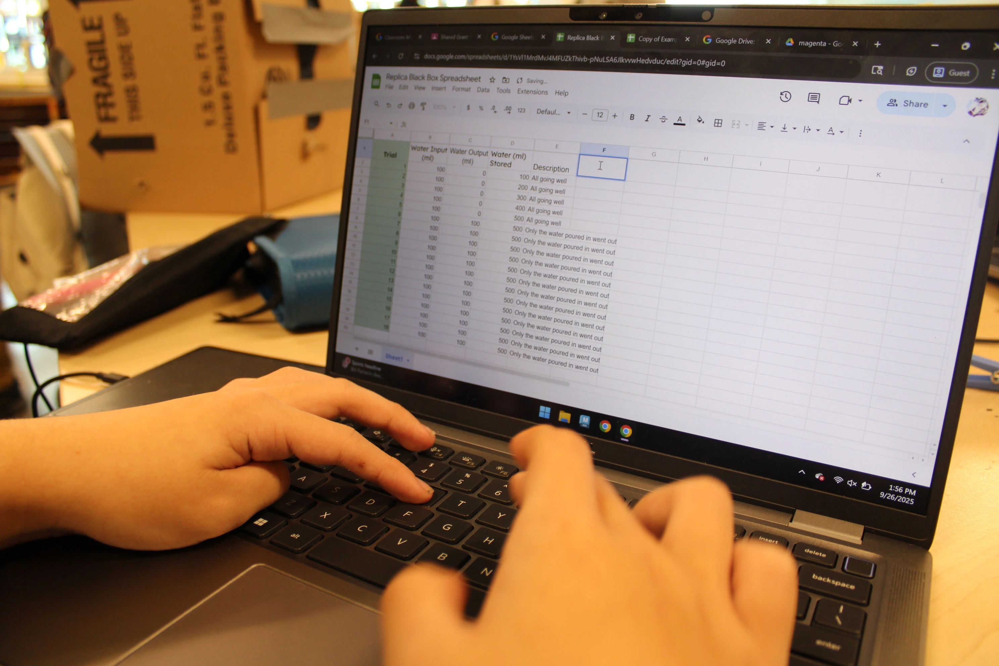
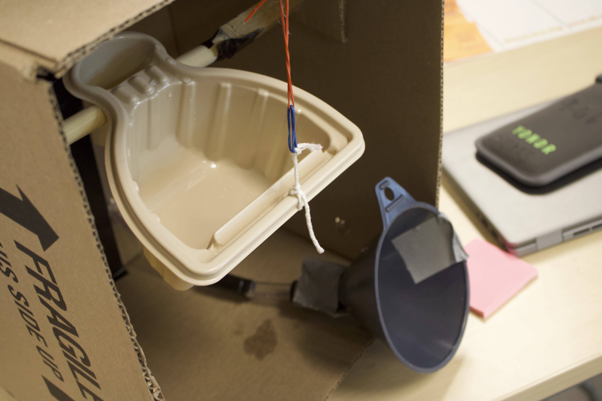

In our media and tech class, we were challenged to deduce the inner mechanisms of a ‘Mystery Black Box’. However, the only way we were allowed to observe the box was by pouring water into the box and measuring the output quantity. After this, we physically and digitally modeled our hypothesis about the inner workings of the box. The following are a list of the parts of our project:
I, personally, believe that it is highly unlikely that the ‘Mystery Black Box’ contains some sort of tipping mechanism, due to findings in our data sets. Initially, we saw it to be evident that the amount of water poured into the box wasn’t the same as the amount of water that came out. To further our experimentation surrounding our hypothesis, we poured a set amount of water into the box and measured the amount of water that came out. To verify our theories to a higher extent, we made a physical representation of our ideas behind the inside of the box. After that, we used Google Sheets to format all relevant data, and learn to utilize the program. Moving even deeper into our investigation, we digitally modeled our box in Adobe Photoshop (2D) and Autodesk Maya (3D). Through all of this, we saw differing trends in the data of our models and the the data of the real box, suggesting that we are correct in our assumption of a lack of a tipping mechanism. That being said, however, we did experience a few difficulties of human and technical error. Although these were detrimental to our process, none were significant enough to sway our data or subsequent conclusions. In our data, in general, we saw our water output amounts stay very close to zero, until our inner container filled with water (at 500mL), and from then on, 100 mL of water came out of the box every single time. Throughout the scientific world, we see a great propensity toward the use of models and prototypes. Models function as a simpler representation of a more complex object or concept. They function effectively to test and visualize simplistic elements of a more complex whole, but fail to completely represent and detail the intricacies of what they are based upon. In our investigation, for example, we created a slightly smaller box using different materials from the ‘Mystery Black Box’, and it functioned well to showcase the general data trends of the box (and that they didn’t align with our model). If it had been the case that the box contained a mechanism that we were attempting to eliminate as a possibility, the trend of storing all water inputted until the inner container filled and releasing all excess water after that would show true. That simply was not the case here, and that supports our claim.


During our investigation, we chiefly used photography to document our processes and work. We took shots of all of our models–digital and physical–as well as ourselves and groupmates working through the project. Through this process, we utilized a litany of different photography techniques to convey purpose with clarity. These included the rule of thirds, other framing techniques (angle and shot distance), and more.
In this section of our investigation, we created 2-dimensional depictions of our ideas surrounding the inner workings of the ‘Mystery Black Box’. In class, we physically sketched a 2D representation of our physical model. To follow this up, we created a similar representation in Adobe Photoshop and added animation. During this endeavor, we used a multitude of digital tools and techniques, such as: drawing tools (digital brushes, erasers, etc.), artificial intelligence tools (generative fill, AI eraser tools, etc.), animation tools (frame speed, count, composition, etc.), and general organizational tools (layers, select tools, etc.).
Throughout the duration of this final step of our investigation, we were tasked with the digital recreation of our physical model. Some skills utilized and learned in this section include: poly modeling (and the use of relevant tools), model rigging (binding a 3D model to a set of points), 3D animation—and applicable tool use, material/lighting application and relevant tools (material settings, light types, intensities, etc.), and the rendering of previous steps. There was also an optional extension we could partake in that was centered around the addition of special effects. Here, we learned to add liquid water to our model using Bifrost liquid simulation.
In this project, we learned and developed many skills relevant to modern day professions and procedures. To illustrate one of these that was at the forefront of our investigation, I would say that we were pushed to direct ourselves heavily, take great initiative, and exercise accountability for our work and the completion of our goals. For the majority of this project, we were given general directions, but helped and expected to conduct ourselves in a timely, responsible and efficient manner. For example: we were helped to model and develop our digital box representations, but were never really very constricted in the relevant time frame and content of our representations. We were guided to analyze our data, but not simply directed. This all being said, of course, there were certain content and time constraints and minimums that needed to be met in all phases of this project.